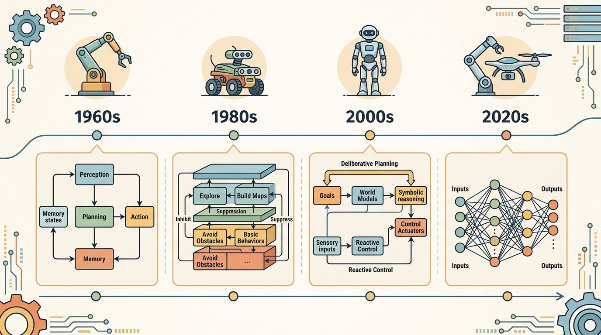

"A foundation model is a powerful component, not a complete robot. The stack still needs every layer the model does not replace."
A Careful Control Loop

Where LLMs, VLMs, and VLAs sit in the stack is one lens on embodied system architectures. We study it because an embodied agent needs decisions that survive contact with noisy sensors, delayed effects, and changing environments.
This section develops the technical contract for where llms, vlms, and vlas sit in the stack into a usable mental model. First we define the object of study, then we connect it to the agent loop, then we test it with a compact implementation.
The key question in Where LLMs, VLMs, and VLAs sit in the stack is practical: what must the agent know, what can it observe, what action is available, and what evidence shows that the action worked under the stated conditions?
A representation earns its place when it changes the measurable action interface. In where llms, vlms, and vlas sit in the stack, the reader should keep asking which decision becomes easier, safer, or more reliable.
Theory
For Where LLMs, VLMs, and VLAs sit in the stack, the practical design rule is to make the interface inspectable before optimization begins: inputs, outputs, units, latency, bounds, and failure labels should all be visible in the saved artifact.
LLMs, VLMs, and VLAs are not interchangeable upgrades. They sit at different interfaces in the stack. An LLM maps language context to language, plans, tool calls, or symbolic instructions. A VLM maps images and language to grounded descriptions, detections, affordances, or decisions. A VLA maps visual and language context closer to robot action, often as action tokens, trajectories, or low-level command chunks.
| Model family | Typical input | Typical output | Interface risk |
|---|---|---|---|
| LLM | goal text, memory, tool results | plan, code, command, or query | May produce plausible plans that are not grounded in the current scene. |
| VLM | image, video, text prompt | description, localization, affordance, or decision | May see the object but miss geometry, contact, timing, or calibration constraints. |
| VLA | image or state plus language goal | action token, trajectory, or controller target | May hide action scaling, embodiment assumptions, and recovery logic inside the model. |
The design question is therefore not "Which model is most capable?" The better question is "Which interface needs learned generalization, and which interface still needs an explicit contract?" A strong architecture often uses an LLM for task decomposition, a VLM for scene grounding, and a VLA or controller for execution, with explicit checks between them.
Consider a specific case: Google's RT-2 (Brohan et al., 2023) places a VLM (PaLI-X or PaLM-E backbone) at the grounding interface and outputs action tokens directly, collapsing the VLM and VLA roles into one model. This works well for pick-and-place tasks where the visual and action spaces are narrow enough to co-train, but the same model cannot easily be updated when the robot's embodiment changes, because action scaling is baked into the weights. By contrast, SayCan (Ahn et al., 2022) keeps the LLM and the low-level controller separate: GPT-style language planning scores candidate skills, and pre-trained RL policies execute them, making each interface independently replaceable. The architectural difference is not a matter of capability; it is a choice about which interface must remain auditable and swappable.
The mechanism in Where LLMs, VLMs, and VLAs sit in the stack is the contract between representation and action. Name what enters the module, what leaves it, which assumptions make that transformation valid, and which log would reveal a bad handoff.
Worked Example
The three model families compose into one pipeline: an LLM decomposes the goal, a VLM grounds each subgoal in the image, and a VLA turns a grounded subgoal into an action. The example uses stand-in functions for each model so the structure is visible, then runs the section's key diagnostic, oracle substitution, to locate which interface caused a failure. This is the executable form of the Fun Note: the plan and the pointing only matter if the action survives contact.
# Stand-ins for the three model families. Swap in real models later;
# the contract (what enters, what leaves) is what we are testing.
def llm_plan(goal): # language -> ordered subgoals
return {"put apple in bowl": ["grasp apple", "place in bowl"]}[goal]
def vlm_ground(subgoal, scene): # image+text -> object + pose
obj = subgoal.split()[-1] # "grasp apple" / "place in bowl"
return scene.get(obj) # None if not visible -> grounding gap
def vla_act(grounded): # state+goal -> action token
if grounded is None:
return None
return f"move_to({grounded['x']:.2f},{grounded['y']:.2f}) + close"
def run(goal, scene):
for sub in llm_plan(goal):
g = vlm_ground(sub, scene)
a = vla_act(g)
print(f" {sub:16s} ground={g} action={a}")
if a is None:
return f"FAIL at grounding: {sub}"
return "ok"
scene_ok = {"apple": {"x": 0.4, "y": 0.1}, "bowl": {"x": 0.7, "y": 0.0}}
scene_bad = {"bowl": {"x": 0.7, "y": 0.0}} # apple occluded
print("scene_ok :", run("put apple in bowl", scene_ok))
print("scene_bad:", run("put apple in bowl", scene_bad))
# Oracle substitution: inject the apple pose to confirm the VLM, not the
# LLM or VLA, was the first cause in scene_bad.
scene_fixed = dict(scene_bad, apple={"x": 0.4, "y": 0.1})
print("oracle :", run("put apple in bowl", scene_fixed))
Expected output: the good scene runs end to end; the bad scene fails at grounding because the apple is not visible, and the VLA correctly produces no action rather than reaching for nothing; the oracle run succeeds once the missing pose is injected, which proves the VLM grounding was the first cause. The lesson matches the section's diagnostic: replace one model output with a verified value and see whether the system recovers, instead of swapping the whole foundation model on a hunch.
For Where LLMs, VLMs, and VLAs sit in the stack, the hand-built fragment is a visibility tool. Production work should move to maintained stacks such as Hugging Face Transformers, open VLMs, OpenVLA, openpi, LeRobot, and tool-calling planners once the section has made the interface, logging contract, and failure recovery path explicit.
Practical Recipe
- Write the observation, action, and success metric before choosing a model.
- Build a baseline that is simple enough to debug by inspection.
- Add the library implementation only after the baseline behavior is understood.
- Record failures as structured cases: perception error, state error, planning error, control error, or evaluation error.
- Run at least one perturbation test before trusting the result.
The common mistake in Where LLMs, VLMs, and VLAs sit in the stack is to celebrate the component score before checking the closed-loop handoff. The failure usually appears at the boundary: stale state, wrong frame, delayed action, saturated actuator, or metric that ignores the real task cost.
A robotics team using where llms, vlms, and vlas sit in the stack should log not only final success, but intermediate observations, chosen actions, controller status, and recovery events. The logs reveal whether the method is solving the task or merely passing the easiest episodes.
An LLM can explain the plan, a VLM can point at the object, and a VLA is where the explanation has to survive contact with the gripper.
For Where LLMs, VLMs, and VLAs sit in the stack, treat frontier claims as hypotheses until they expose enough detail to reproduce the result: data boundary, embodiment, controller interface, evaluation panel, and failure cases.
Can you name the observation, state estimate, action, success metric, and most likely failure mode for where llms, vlms, and vlas sit in the stack? If not, the system boundary is still too vague.
Where LLMs, VLMs, and VLAs sit in the stack becomes useful when it is tied to a closed-loop contract for how perception, estimation, planning, learning, and control are arranged into a system. The contract names the observation stream, the action representation, the timing budget, the safety boundary, and the result artifact. That is the bridge between a readable concept and a system a skeptical builder can test.
For Where LLMs, VLMs, and VLAs sit in the stack, separate the conceptual claim, the systems claim, and the evidence claim. A good explanation, a clean API, and one successful rollout are different kinds of evidence, and the section should keep them distinct.
| Tool or Library | Role in This Topic | Builder Advice |
|---|---|---|
| ROS 2 | separates system modules while preserving message contracts and timing | Use it when the hand-built contract is clear and the experiment needs repeatable runs. |
| MuJoCo | gives architecture choices a repeatable simulated world for stress tests | Use it when the hand-built contract is clear and the experiment needs repeatable runs. |
| LeRobot | anchors modern policy architectures in reusable datasets and policy APIs | Use it when the hand-built contract is clear and the experiment needs repeatable runs. |
For Where LLMs, VLMs, and VLAs sit in the stack, a robust implementation starts with one inspectable baseline whose artifact records observations, actions, units, timestamps, seeds, termination reasons, and the perturbation applied. The maintained-tool version is useful only if it preserves that schema and lets the comparison remain construct-matched.
- Write a one-paragraph task contract with observation, action, success, failure, and safety fields.
- Start with the smallest simulator, dataset, or wrapper that exposes the task contract faithfully.
- Run one deterministic smoke test and one perturbation test before scaling.
- Save one artifact containing configuration, seed, metrics, traces, and failure labels.
- Compare methods only when the same script evaluates the same panel, split, seed set, and metric.
When Where LLMs, VLMs, and VLAs sit in the stack fails, avoid labeling the whole method as weak. First assign the failure to perception, state estimation, planning, control, timing, data coverage, or evaluation. Then rerun one controlled perturbation that isolates the suspected cause. This pattern turns a disappointing rollout into a reusable diagnostic asset.
The quickest diagnostic is to replace one model output with a verified oracle value. If the system succeeds when the LLM plan is manually corrected, the language-level decomposition is the first suspect. If it succeeds only when the VLM grounding is corrected, the problem is scene understanding. If it still fails after both are corrected, inspect action scaling, controller limits, and embodiment-specific assumptions before changing the foundation model.
Where LLMs, VLMs, and VLAs sit in the stack is useful when it makes the perception-action loop more reliable, not when it merely adds a more impressive model name.
Design a method-matched experiment for Where LLMs, VLMs, and VLAs sit in the stack. Specify the environment, observation schema, action interface, metric, and one perturbation that targets the section's core assumption.
What's Next?
Section 3.8 studies architecture-specific failure modes and how to diagnose them.
Bibliography & Further Reading
Foundational References For This Section
Quigley, M. et al.. "ROS: an open-source Robot Operating System." (2009). https://www.ros.org/
The systems reference for modular robot software and message-passing architecture.
Todorov, E., Erez, T., and Tassa, Y.. "MuJoCo: A physics engine for model-based control." (2012). https://mujoco.org/
A widely used simulator for architecture and control experiments.
Brohan, A. et al.. "RT-2: Vision-Language-Action Models Transfer Web Knowledge to Robotic Control." (2023). https://arxiv.org/abs/2307.15818
A central reference for locating VLM and VLA models in embodied control stacks.